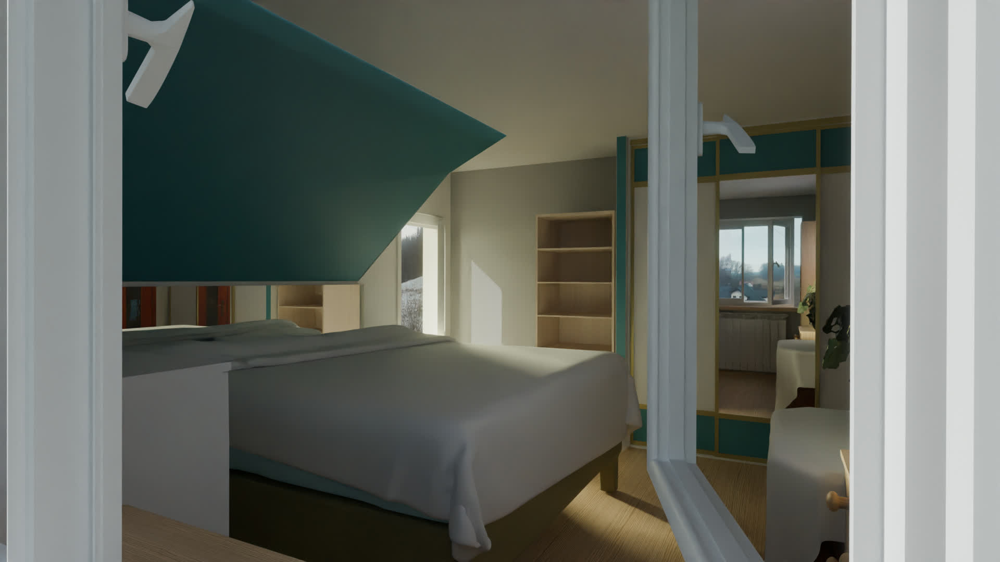
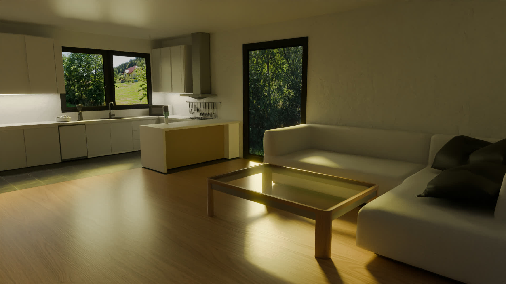
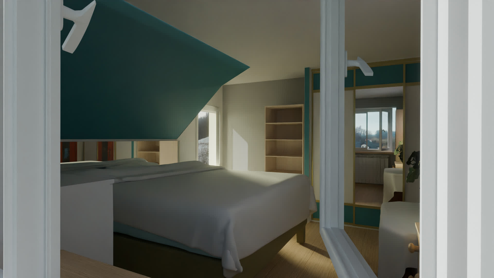
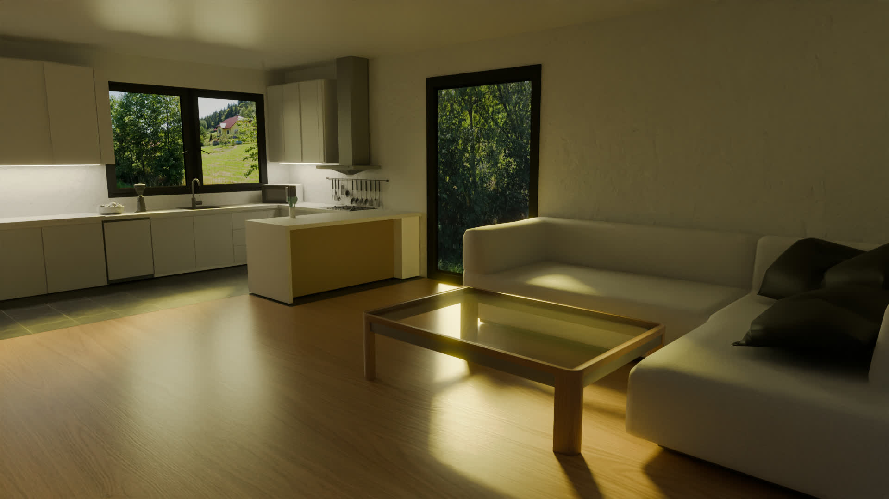
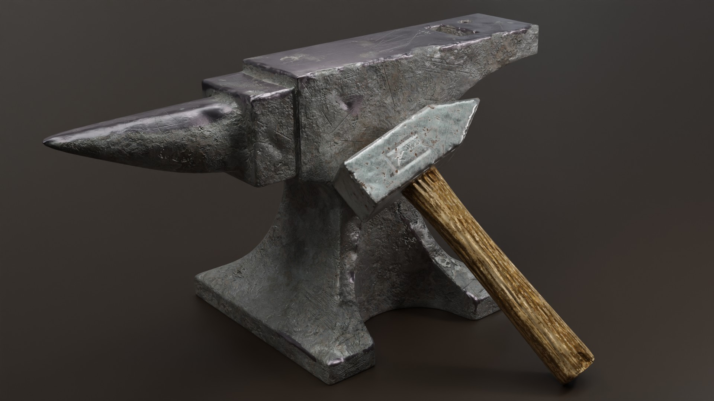
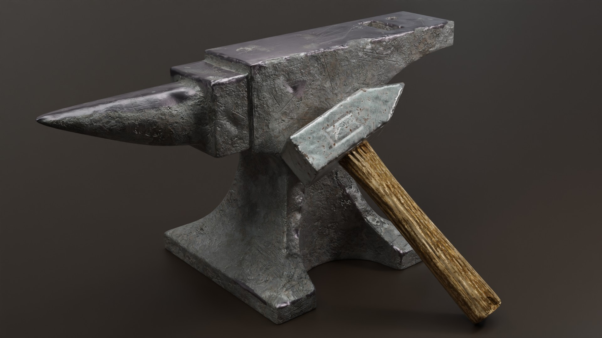

Projekty Techniczne
Synergia projektowania CAD, inżynierii materiałowej i technologii motoryzacyjnych[cite: 5, 8].

Projektowanie Systemów CAD (SolidWorks)


Inżynieria Precyzyjna
Projektowanie części i złożonych mechanizmów w środowisku SolidWorks. Skupiam się na optymalizacji geometrii pod kątem wytrzymałościowym, realizując m.in. autorskie projekty ram dla dronów FPV.

Przyrostowe Technologie Wytwarzania (Druk 3D)
 



Od Modelu do Prototypu
Projektowanie zorientowane na Manufacturing, ze szczególnym uwzględnieniem technologii druku 3D[cite: 8]. Wykorzystuję zaawansowaną wiedzę z zakresu materiałoznawstwa tworzyw sztucznych zdobytą na AGH, aby dobierać parametry pod konkretne zastosowania techniczne[cite: 3, 8].

Technologie Motoryzacyjne (TiTM AGH)
 

Wiedza Specjalistyczna
Projekty realizowane w ramach kierunku Tworzywa i Technologie Motoryzacyjne na AGH[cite: 3]. Analiza technologii wykorzystywanych w nowoczesnym przemyśle automotive, wspierana narzędziami AI w celu optymalizacji procesów twórczych[cite: 9, 15].

Montaż i nagrywanie

Od Modelu do Prototypu
Projektowanie zorientowane na Manufacturing, ze szczególnym uwzględnieniem technologii druku 3D[cite: 8]. Wykorzystuję zaawansowaną wiedzę z zakresu materiałoznawstwa tworzyw sztucznych zdobytą na AGH, aby dobierać parametry pod konkretne zastosowania techniczne[cite: 3, 8].